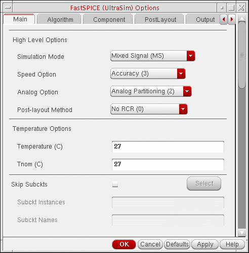

2
Using the Spectre AMS Designer Simulator
Spectre AMS Designer has many advantages:
- Better performance (33% for this particular example)
- More powerful digital solver (NC-Sim versus Verilog-XL)
- Powerful connect rules (CRs)
- Flexible discipline definitions
- Bidirectional CR support
- More language support (Verilog-AMS, VHDL-AMS, SystemVerilog, SystemC)
If you use the Spectre AMS Designer simulator in the Virtuoso Analog Design Environment (ADE), there are two netlisters:
-
The cell-based netlister, which is the original netlister for AMS, requires
amssimInfo (which contains information such as a parameter list and how to netlist each component) when it generates the individualnetlist.vamsnetlist files in the library/cell/view directory structure. For more information, see “Netlisting” in the Virtuoso AMS Environment User Guide. -
The open simulation system (OSS) netlister is available in IC 5.1.41 USR4 and later. You can use this netlister when you migrate to AMS Designer. The OSS netlister uses existing
spectreviews. The OSS netlister generates a single netlist file (netlist.vams) that includes all the modules that need to be compiled. (The final netlist is also one file for Spectre and UltraSim.) The OSS netlister works the same way for the AMS Designer simulator as it does for the Spectre and UltraSim simulators.
If you are using the OSS netlister, you can use the same config view to run AMS Designer.
This tutorial illustrates how to use the OSS netlister and ncverilog so that you can benefit from the many advantages of AMS Designer. See the following topics for more information:
- Changing the Simulator to AMS Designer
- Loading the State File for AMS Designer
- Selecting and Customizing Connect Rules for AMS Designer
- Setting Netlister and Run Modes
- Viewing Options
- Netlisting and Running
- Viewing Waveforms
- Displaying Partitions
- Understanding Connect Rules and Disciplines in AMS Designer
Changing the Simulator to AMS Designer
To change the simulator to AMS Designer, do the following:
-
In the Virtuoso® Analog Design Environment session window,
choose Setup – Simulator/Directory/Host.
The Choosing Simulator/Directory/Host form appears. -
In the Simulator drop-down combo box, select ams.
-
Click OK.
Simulator: ams appears on the status bar in the Virtuoso® Analog Design Environment session window. The name of the analog solver (Spectre or UltraSim) appears in parentheses after ams.
Loading the State File for AMS Designer
To load the state file for AMS Designer, do the following:
-
In the Virtuoso® Analog Design Environment window, choose Session – Load State.
The Loading State form appears.
-
In the State Name area, select state_amsu.
This state uses the UltraSim solver. -
Click OK.
The state settings appear in the Virtuoso® Analog Design Environment session window, such as tran … 10u in the Analyses area and nodes to plot in the Outputs area. Simulator: ams(UltraSim) appears on the status bar in the ADE window.

Selecting and Customizing Connect Rules for AMS Designer
To specify and customize
-
In the Virtuoso® Analog Design Environment window, choose Setup – Connect Rules.
The Select Connect Rules form appears.
-
In the Rules Name drop-down combo box, select connectLib.ConnRules_3V_basic.
-
(Optional) To view the contents of the connect rule, click View.
The connect rule file appears in a window. When you are finished viewing the file, you can choose File – Close Window. -
To customize this connect rule, click Customize.
The Customize Built-in Rules form appears.
-
In the Description field, change the name of the rule to
My_ConnRules_25V_mid:This is the description for My_ConnRules_25V_mid
-
In the Connect Module Declarations group box, hilight the top three lines containing information for modules E2L_0, L2E_0, and Bidir_0.
The shared parameters appear in the Parameters group box.
-
Change these values as follows:
- Click OK.
-
On the Select Connect Rules form, click Add.
Modified built-in appears in the Type column. - Click OK.
The connect rules you specify on the Select Connect Rules form apply to the whole design.
Setting Netlister and Run Modes
To set netlister and run modes, do the following:
-
In the Virtuoso® Analog Design Environment window, choose Simulation – Netlist and Run Options.
The Netlister and Run Options form appears. -
For Netlister Mode, select OSS-based.
The ncverilog radio button appears as a Run Mode choice.
Click OK.
You are ready to simulate.
Viewing Options
As you proceed through this next set of steps, you will notice several choices on the Simulation – Options menu in the Virtuoso® Analog Design Environment window:
You will not change any of these options during this example, but you will view some of the forms.
Viewing Analog (Spectre) Options
To view Analog (Spectre) options, do the following:
-
In the Virtuoso® Analog Design Environment window, choose Simulation – Options – Analog(Spectre).
The Analog (Spectre) Options form appears.
For information about the options you can set on this form, see the Spectre Circuit Simulator and Accelerated Parallel Simulator User Guide. - When you are finished viewing Spectre options, click Cancel to close the form.
Viewing FastSPICE (UltraSim) Options
To view FastSPICE (UltraSim) options, do the following:
-
In the Virtuoso® Analog Design Environment window, choose Simulation – Options – FastSPICE(UltraSim).
The FastSPICE (UltraSim) Options form appears.
For information about the options you can set on this form, see the Virtuoso UltraSim Simulator User Guide. - When you are finished viewing FastSPICE options, click Cancel to close the form.
Viewing AMS Options
To view AMS simulation options, do the following:
-
In the Virtuoso® Analog Design Environment window, choose Simulation – Options – AMS Simulator.
-
Scroll down to the bottom of this form to see that
-iereportappears in the Additional arguments field.
When you specify the-iereportoption, the elaborator generates an interface element (IE) report. The IE report appears at the top of the simulation log file. This report contains information about each IE the software inserted into the design, such as its name, net, discipline, and so on. - When you are finished viewing options, click Cancel to close the form.
Netlisting and Running
To netlist and run, do the following:
-
In the Virtuoso® Analog Design Environment window, choose Simulation – Netlist and Run.
Status appears in the upper left corner of the window. Simulation output information appears in thencverilog.logfile. The simulation time appears at the end of the file:Time Usage: Total user time: 0:04:16 (256.980 sec), system time: 0:00:01 (1.100 sec), real time: 0:04:26 (266.600 sec)
Because -iereport appears in the Additional arguments field on the Main tab of the AMS tabbed window (see “Viewing AMS Options”), an IE report appears at the top of the log file. That report might look something like this:----------IE report ------------- Automatically inserted instance: pll_160MHz_sim.I3.I11.I15.net18__E2L__logic (merged): connectmodule name: E2L, inserted across signal: net18 and ports of discipline: logic Sensitivity infomation: No Sensitivity info Discipline of Port (Ain): electrical, Analog port Discipline of Port (Dout): logic, Digital port Drivers of port Dout: No drivers Loads of port Dout: No loads
As you scroll down past UltraSim version and build time information, you will notice messages related to the compiled C flow for Verilog-A. Those messages might look something like this:File read: .../Migrate_2_AMSD/models/spectre/resd_va.va Created directory amsControl.ahdlSimDB/ (775) Created directory amsControl.ahdlSimDB/2143_migrateToAMS_Migrate_2_AMSD_models_spectre_resd_va.va.ahdlcmi/ (775) Created directory amsControl.ahdlSimDB/2143_migrateToAMS_Migrate_2_AMSD_models_spectre_resd_va.va.ahdlcmi/Linux2.4.21-37.ELsmp+gcc/ (775) Compiling ahdlcmi module library. Finished compilation in 2 s (elapsed). Installed compiled interface for resd_va.
You can use the compiled C flow to boost performance particularly when you are using Verilog-A to model bsources or CMOS devices such as MOSFETs, resistors, and capacitors. See “Using the Compiled C Code Flow” in the Cadence Verilog-A Language Reference for more information.
The IUS 5.83 release supports a feature called FastCross that speeds up the simulation by reducing the number of global time steps. Information about the total global time steps appears near the end of the log file:Total Accepts: 1.452 M
You can close each window by choosing File – Close Window.
Viewing Waveforms
When the simulation finishes, a graph window appears in Virtuoso Visualization and Analysis XL. For derails on using this waveform tool, see the Virtuoso Visualization and Analysis XL User Guide.
Displaying Partitions
You can verify the partitions for AMS Designer:
- Make the AMS menu available in the menu bar. For this, choose Launch – Plug-ins – Mixed Signal – Options – AMS.
- In the schematic window, descend into I3 :
- In the schematic window, choose AMS – Display Partition – Initialize.
-
In the schematic window, choose AMS – Display Partition – Interactive.
The AMS Partition Display form appears.
-
Click OK.
On the schematic, mixed-signal items appear in orange and yellow.
You can see the set up for connect rules and disciplines both from the AMS menu in the schematic window and by choosing Setup – Connect Rules in the Virtuoso® Analog Design Environment window.
Understanding Connect Rules and Disciplines in AMS Designer
The AMS Designer simulator uses disciplines, connect modules, and connect rules in place of A2D and D2A interface elements. A discipline denotes an object as analog or digital (with, for example, an electrical or logic discipline). When you connect objects of different disciplines, connect rules determine which connect modules to insert between the objects. The inserted connect modules convert signals to values that are appropriate for each discipline. You can modify connect rule parameters such as supply voltage and rise time in your connect modules to tailor conversion of your design.
Cadence provides sample connect rules in the following directory:
$AMSHOME/tools/affirma_ams/etc/connect_lib
The sample connect rules (CRs) here are built in and ready for use in the Virtuoso® Analog Design Environment (ADE). Built-in CRs work for a certain set of voltage supplies only (such as 1.8V, 3V, and 5V). You can modify the parameters to customize a built-in CR for your design needs. Advanced designers can write customized CRs and include them in the simulation.
For this example, the voltage supply is 2.5 V. We can customize the 3V built-in CR to fit our simulation.
Simulating the Design Using the Spectre Solver
The AMS Designer simulator has two analog solvers: UltraSim and Spectre. To simulate the example design using the Spectre solver, you can do the following:
- Save the results from the previous simulation as follows:
-
Choose Simulation – Solver.
The Choose Solver form appears.
- Select Spectre as the Analog solver to be used.
- Click OK.
-
In the Virtuoso® Analog Design Environment window, choose Simulation – Netlist and Run.
Status appears in the upper left corner of the window. Simulation output information appears in thencverilog.logfile. The simulation time appears at the end of the file.Total time required for tran analysis `tran' was 3.11407 ks (51m 54.1s).
You can compare these results to those from the simulation using AMS Designer with the UltraSim solver.
When the simulation finishes, a graph window appears. For derails on using this waveform tool, see the Virtuoso Visualization and Analysis XL User Guide. .
Return to top